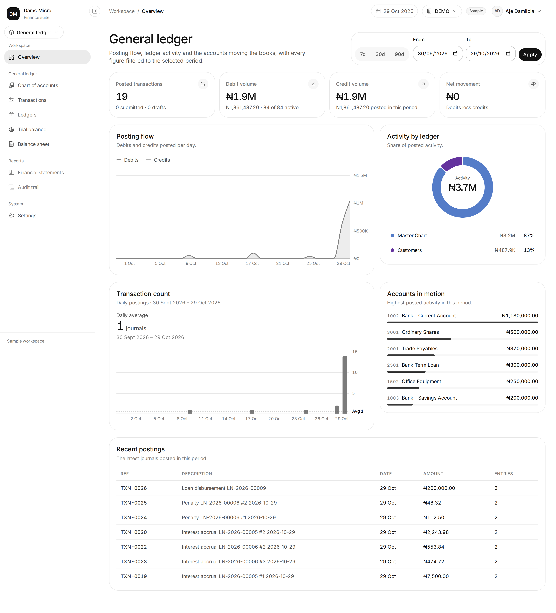
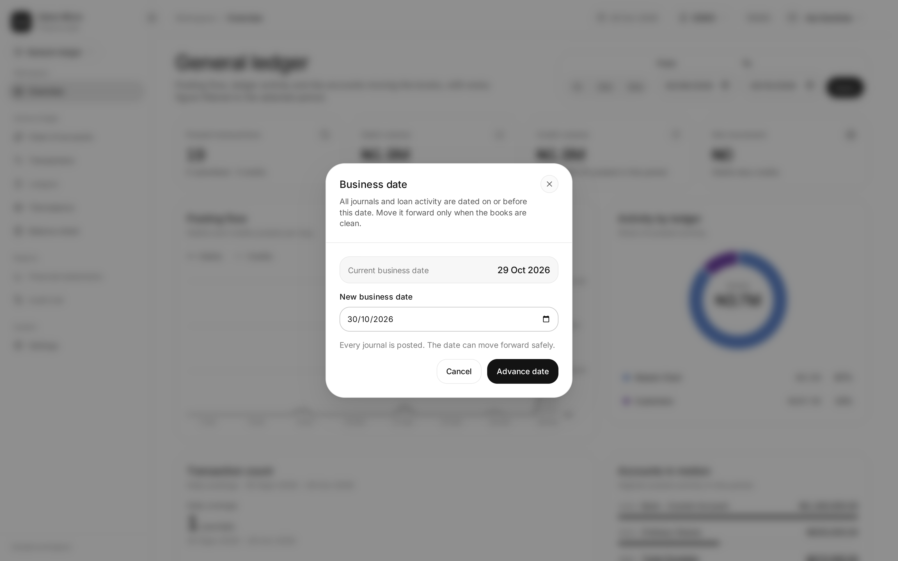

DAMS Micro: a double-entry accounting and loan management system.
Presented byAje Damilola
Matric number230591336
DepartmentComputer Science
InstitutionLagos State University (LASU)
Placement organisationGolden Edge Softech
SIWES periodMarch – September 2026
Built with Laravel 13 · PostgreSQL · React 19 and Inertia · Tailwind CSS 4
My name is Aje Damilola, and my matric number is 230591336. This is my SIWES presentation on DAMS Micro, an accounting and loan-management prototype inspired by the backend work I did during my placement. I will first explain that real asset-management project, then show how I applied its engineering and accounting lessons in my own system.
My industrial experience
I worked on the backend of a real investment platform
At Golden Edge Softech, I contributed to a project for an asset management firm that manages investments for its customers.
Backend development
I built the rules behind financial actions.
My Laravel work focused on the services, validations and database operations behind customer investments and accounting workflows.
PlacementGolden Edge Softech
RoleBackend Developer · Laravel
Loans showed me how one event can affect schedules, customer balances and the ledger at the same time.
Platform coverage
One backend, five financial areas
General ledger
Fixed assets
Investments
Treasury placements
Loans
I completed my placement at Golden Edge Softech, where I worked on the Laravel backend of a project for an asset management firm. The firm manages investments for its customers, so the platform covered financial areas including the general ledger, fixed assets, investments, treasury placements and loans. My role involved the server-side rules, validations and database operations behind those workflows. Loans were especially important to me because they later inspired this SIWES project.
From experience to project
What I learned became the blueprint for DAMS Micro
I applied both the engineering patterns and the accounting principles I encountered during my placement.
Code-wise
Keep business rules in focused Laravel services.
Use database transactions for all-or-nothing financial actions.
Validate workflows before changing balances or status.
Test money paths and make important actions traceable.
Accounting-wise
Every transaction follows debit and credit rules.
Account types determine their normal balance.
The chart of accounts gives every posting a home.
The trial balance checks that total debits equal credits.
Workplace experience → DAMS Micro prototypeLoans inspired the project; the general ledger made every action accountable.
My SIWES project was a chance to apply what I learned rather than reproduce the production system. Code-wise, I used Laravel services, database transactions, validation and tests to make financial actions safe and traceable. Accounting-wise, I applied debit and credit rules, normal balances, account types, the chart of accounts and the trial balance. Loans inspired the prototype, while the general ledger became the accounting backbone that connects every action.
The problem
Manual workflows can make reconciliation harder
DAMS Micro explores the risk of keeping loan activity, journals and business dates in separate routines.
Balancing depends on manual checks
Without posting controls, an incomplete or mistyped entry can go unnoticed.
Control gap
Loan trackers live outside the ledger
Separate records increase the risk of missed interest, fees and repayments.
Reconciliation gap
Day-end is a manual routine
Unposted work can be overlooked when the business date changes.
Audit gap
The result: more reconciliation work and less confidence in financial reports.
This slide describes the control risks that DAMS Micro is designed to address; it is not a claim about my placement organisation. When loan records, journal entries and date controls are handled separately, people must reconcile them manually. The prototype turns those checks into explicit application rules.
The solution
Every workflow follows one path into the books
DAMS Micro turns a loan event or manual journal into validated entries, then posts them once to the general ledger.
One posting path
01
Capture the event
A loan action or manual journal starts the workflow.
02
Validate and map
Laravel applies the account mapping and checks that debits equal credits.
03
Post once
The same entries feed account statements, the trial balance and financial reports.
Loan operations and manual journals share the same accounting core; corrections use reversals rather than silent edits.

DAMS Micro uses one posting path. A loan event or manual journal is captured, Laravel applies the configured account mapping, and the posting service verifies that total debits equal total credits. The entries are then posted once to the general ledger, where they feed statements, the trial balance and reports. This keeps lending and accounting connected without duplicating the books.
System architecture
Posting rules belong on the server, not the screen
The interface collects input. Server-side services validate and post the accounting entries.
Requests flow through server-side validation before accounting services update the ledger.
For the DAMS Micro prototype, I built the Laravel backend that handles workflow rules, journal posting and balance changes. React and Inertia present the interface, while PostgreSQL stores the durable record. Keeping accounting rules on the server prevents the screen from becoming the source of financial decisions.
Accounting backbone
The chart stays small while customer detail stays traceable
A control account holds the summary; the customer subledger holds the individual balances behind it.
One hierarchy, two levels of detail
Chart of accounts
Groups the company's assets, liabilities, equity, revenue and expenses.
1100 Customer Control
A summary account whose balance equals the total of all customer accounts.
Customer subledger
Stores each customer's movements and balance without crowding the main chart.
Only leaf accounts accept postings. Control accounts receive totals, not direct entries.
The chart of accounts provides the financial structure. Customer Control is a control account: its balance summarises all customer accounts, while the customer subledger preserves each person's detailed movements. This keeps the main chart manageable and the detail traceable. Only leaf accounts accept postings, so the control account receives totals rather than direct journal entries.
Transaction flow
A journal must balance before it reaches the ledger
The posting service rejects an entry when total debits and total credits do not match.
Illustrative loan disbursement
₦200,000 leaves the bank
The same amount becomes a loan receivable from the customer.
Account mapping converts the business event into journal lines.
The service totals both sides and blocks an imbalance.
Posted entries update their accounts and running balances together.
Debit ₦200,000 = Credit ₦200,000
Balanced journalPosted
Account
Debit
Credit
Loan receivable
₦200,000.00
—
Bank account
—
₦200,000.00
Total
₦200,000.00
₦200,000.00
Debit the loan asset; credit the bank asset. Corrections use reversals rather than editing posted history.
This simplified example shows the economic event before the software rule. When a 200,000 naira loan is disbursed, the organisation gains a loan receivable, so that asset is debited. Cash leaves the bank, so the bank asset is credited. The posting service checks that both sides equal 200,000 naira before writing the entries and their running balances together.
Loan management
Loan schedules connect what is due with what is paid
Product settings define interest and fees. Repayment schedules make each instalment visible.
BookApproveDisburseRepayClose
Accrual separates earning from collection
Accrual records interest when it is earned, even before the borrower pays.
DrInterest receivableAsset: interest still owed
CrInterest incomeRevenue: interest earned
One schedule, a clear repayment history
Track principal, interest, fees and penalties separately.
See each instalment's due amount and remaining balance.
Follow loan activity back to its journal entries.
Interest accrual runs separately from the Advance Day action.
The loan workflow covers customer and KYC records, product selection, booking, approval, disbursement, repayment, and closure. The loan-detail screenshot shows this lifecycle in the application. Interest accrual is a separate command; it is not performed automatically when the business date advances. Next, I will show the business-date control itself.
Business-date control
Advance Day moves the financial clock safely
It checks for unresolved journals, carries balances forward and changes the date in one transaction.
01
Clear the queue
Draft and submitted journals must be resolved, and the target date must be later.
02
Snapshot balances
Lock the business date and carry every leaf-account balance to the selected date.
03
Advance or roll back
All changes succeed together. If one step fails, the database keeps the previous day.
Boundary: this moves the date and balances only. Interest accrual runs separately.

The business date is the system's financial clock. Advance Day first checks that draft and submitted journals have been resolved and that the target date is later. It then locks the date, snapshots every leaf-account balance and advances the date in one database transaction. Every step succeeds together or the system rolls back. Interest accrual remains a separate process.
Key design decisions
Three decisions keep posted balances traceable
Each decision favors a clear audit trail over hidden convenience.
Decision 01
Store balance_after
Statements can read the latest posted balance without replaying the full ledger.
Trade-off: backdated entries require an ordered rebuild.
Decision 02
Reverse; never rewrite history
Posted mistakes are corrected with linked reversals, preserving what happened.
Result: the audit trail remains visible and explainable.
Decision 03Out of scope
Keep external settlement out of scope
The prototype records internal accounting events but does not connect to a payment rail.
The principle: keep balances traceable and be explicit about what the system does not do.
I made three explicit design choices. First, each posted entry stores its resulting balance so statements stay fast, with an ordered rebuild for backdated changes. Second, posted history is never silently edited; corrections use linked reversals. Third, the prototype records internal accounting events but does not connect to an external payment network.
Reports from the working system
Reports turn ledger entries into control checks
The key result stays readable; the full application capture remains available for inspection.
Balance sheet · assets equal liabilities plus equity.
These reports turn posted ledger entries into reviewable controls. The balance sheet shows assets of 1,036,787.20 naira, matched by 670,000 naira in liabilities and 366,787.20 naira in equity. The trial balance shows 2,130,160.82 naira on both sides with zero difference. Those results confirm arithmetic balance, but they do not prove that every business event was classified correctly.
Challenges and fixes
Three accounting risks shaped the implementation
Each risk led to a specific control, rather than another manual workaround.
01
Risk
Corrections can disturb later running balances
Control
Reverse the mistake, then rebuild in date order
Posted history remains intact while later balances are recalculated.
02
Risk
Customer detail can overwhelm the main chart
Control
Use a control account with a customer subledger
The chart keeps one summary while individual balances stay traceable.
03
Risk
The date could advance with unresolved journals
Control
Block the change and advance atomically
Either every balance snapshot and date change succeeds, or none does.
Three implementation risks became explicit controls. Running balances can drift after a backdated correction, so the system uses reversals and an ordered rebuild. Customer detail can overwhelm the chart, so a control account summarises a separate subledger. The business date must not move with unresolved journals, so the change is blocked and completed atomically.
Skills and conclusion
The result was more than a working prototype
I learned to connect backend engineering, accounting controls and clear communication.
Engineering
I built Laravel services that validate workflows and post financial entries safely.
Accounting
I translated debit, credit, normal-balance and reconciliation rules into code.
Communication
I documented the system for accountants and learned to explain technical trade-offs clearly.
Resolve unposted journals and run required processes before advancing the business date.
Build for clarity. Post with controls. Keep every balance traceable.
The main outcome was learning to connect three disciplines. I used backend engineering to make workflows safe, accounting knowledge to define correct postings and controls, and communication skills to document the system for its users. The prototype still has clear limits: external settlement, stronger audit logging and broader reconciliation tests remain future work.
SIWES · March – September 2026
Thank you.
Questions?
Aje Damilola · 230591336Computer Science · Lagos State University
Every naira, both sides.
MFB Core System · double-entry accounting and lending core.
Debits₦50,000.00
Credits₦50,000.00
Difference₦0.00
Thank you for listening. This project helped me connect software engineering with accounting controls, loan workflows and financial reporting. I welcome questions about the accounting model, the implementation choices or what I would improve next.
← → Slides · P Notes · F Fullscreen · Click images to inspect